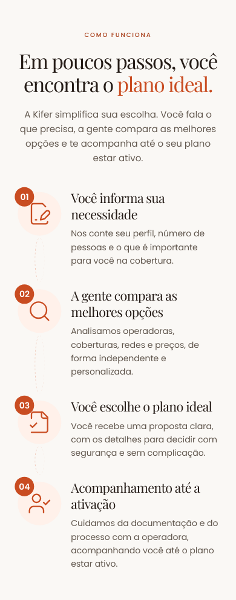
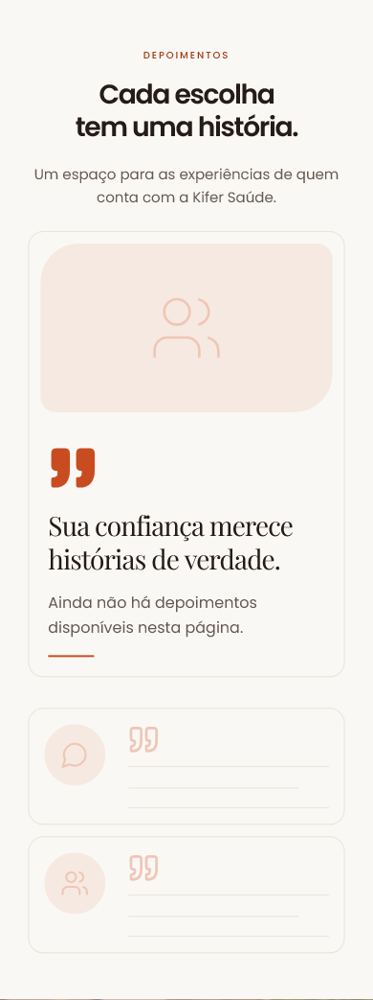
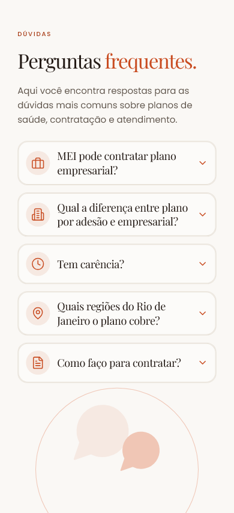
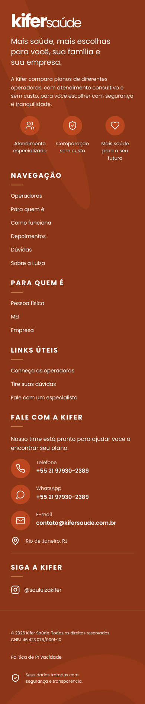

Dez referências mobile, lado a lado com o site.
Comparação das dez imagens fornecidas com capturas reais da versão publicada da Kifer Saúde. Referência à esquerda e implementação à direita, com a mesma largura de exibição e proporções preservadas. Clique em qualquer imagem para abrir o arquivo original.
Capturas de 31/10/2026, 12:57 · WebKit · largura inicial de 390 px, correspondente ao perfil iPhone 12 Pro · Site capturado · Comparação desktop
Sobre diferenças de conteúdo As fotos da Luíza foram atualizadas com sua aprovação. A implementação exibe as cinco operadoras do projeto, os contatos reais e a área reservada aos depoimentos até haver relatos autorizados. O formulário mantém os campos e a integração reais.
Largura da captura 320 px 360 px 375 px 390 px 414 px 430 px
Ir para seção Escolher seção 01 — Hero / abertura 02 — Confiança e operadoras 03 — Para quem é 04 — Como funciona 05 — Depoimentos 06 — Sobre a Luíza 07 — Dúvidas frequentes 08 — Cotação 09 — WhatsApp 10 — Rodapé
Página completa
Primeira tela
10 referências · 10 capturas em 390 px. A abertura inclui o cabeçalho.
01 — Hero / abertura
Referência fornecida 853 × 1844 px · imagem original Implementação atual 390 × 983 px · WebKit
02 — Confiança e operadoras
Referência fornecida 853 × 1844 px · imagem original Implementação atual 390 × 1444 px · WebKit
03 — Para quem é
Referência fornecida 853 × 1844 px · imagem original Implementação atual 390 × 1236 px · WebKit
04 — Como funciona
Referência fornecida 853 × 1844 px · imagem original Implementação atual 390 × 990 px · WebKit 
05 — Depoimentos
Referência fornecida 853 × 1844 px · imagem original Implementação atual 390 × 1043 px · WebKit 
06 — Sobre a Luíza
Referência fornecida 853 × 1844 px · imagem original Implementação atual 390 × 1289 px · WebKit
07 — Dúvidas frequentes
Referência fornecida 853 × 1844 px · imagem original Implementação atual 390 × 853 px · WebKit 
08 — Cotação
Referência fornecida 853 × 1844 px · imagem original Implementação atual 390 × 1659 px · WebKit
09 — WhatsApp
Referência fornecida 853 × 1844 px · imagem original Implementação atual 390 × 1169 px · WebKit
10 — Rodapé
Referência fornecida 853 × 1844 px · imagem original Implementação atual 390 × 1881 px · WebKit 